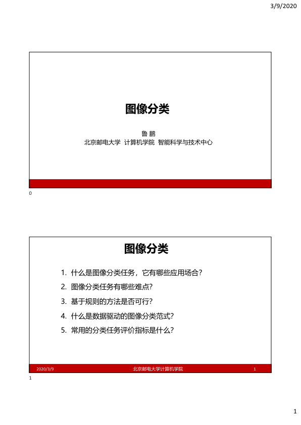
讲师: 鲁鹏
单位: 北京邮电大学 计算机学院 智能科学与技术中心
核心大纲:
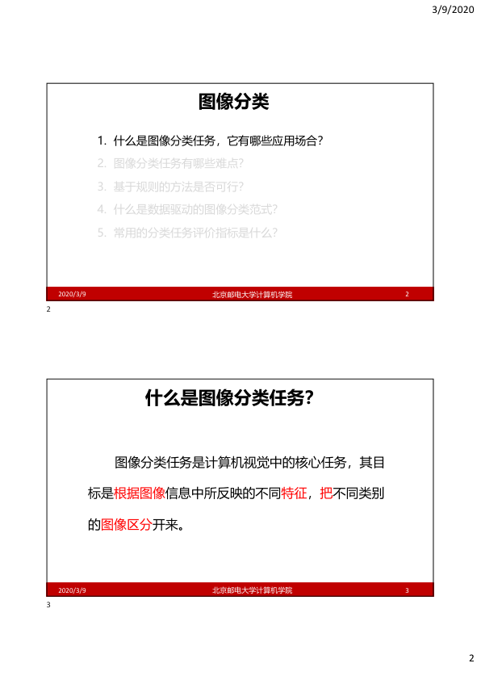
课程大纲聚焦:
定义： 计算机视觉的核心任务。
目标： 根据图像所反映的不同特征，将不同类别的图像区分开来。
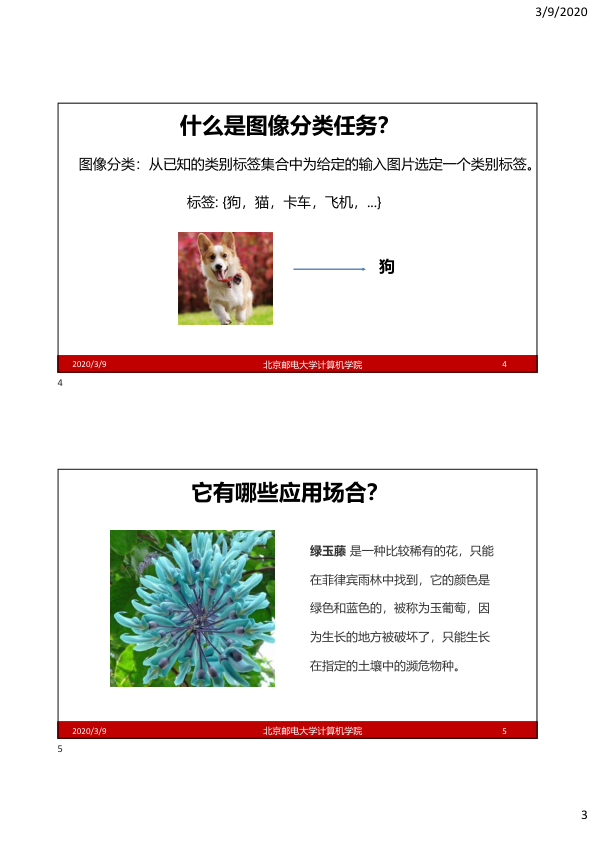
定义: 从已知标签集合中，为输入图像选定一个类别。
过程演示:
1. 输入：包含特定物体的图像 (如：狗)
2. 映射：图像 -> 类别标签 {狗, 猫, 卡车, ...}
案例： 绿玉藤 (Strongylodon macrobotrys)。
核心点： 介绍该稀有植物（原产菲律宾雨林，呈独特蓝绿色，濒危物种）。
分类应用： 展示图像分类在物种识别、珍稀植物保育中的实际应用。
Q1 图像分类有哪些应用场合：
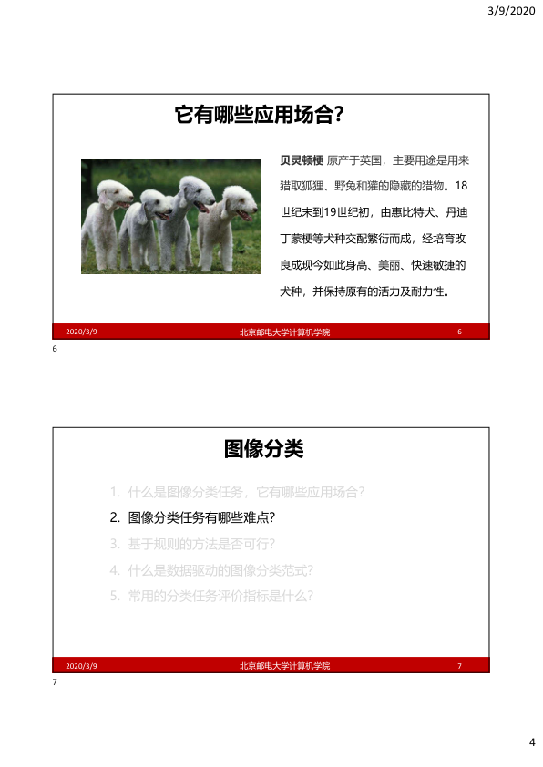
案例： 贝灵顿梗犬 (Bedlington Terrier)。
描述： 介绍了犬种起源 (英国)、历史用途 (猎狐、兔、獾)、培育背景及现代特征 (敏捷、耐力)，作为物体识别的实例。
课程大纲：
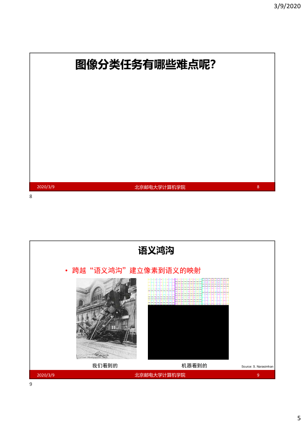
概述： 本页引出图像分类任务在实际应用中面临的诸多挑战。
核心内容： 跨越“语义鸿沟”，建立图像像素到高层语义的映射。
直观对比：
1. 我们看到的：直观的场景图像。
2. 机器看到的：像素数据的数值矩阵。
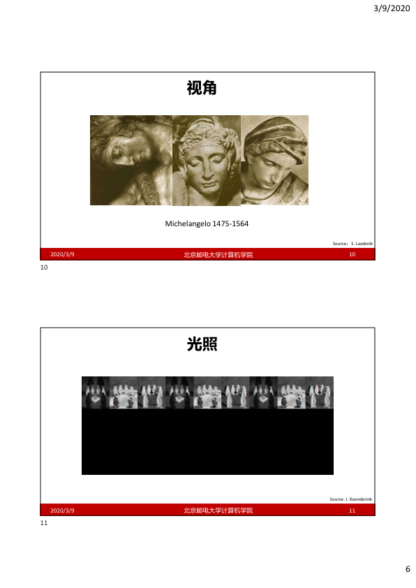
核心内容： 探讨视角对视觉感知的影响。
案例： 米开朗基罗 (Michelangelo) 雕塑头像的三种视角展示。
来源： S. Lazebnik
核心内容： 探讨光照变化对视觉感知的影响。
案例： 同一场景在不同光照条件下的拍摄序列图。
来源： J. Koenderink
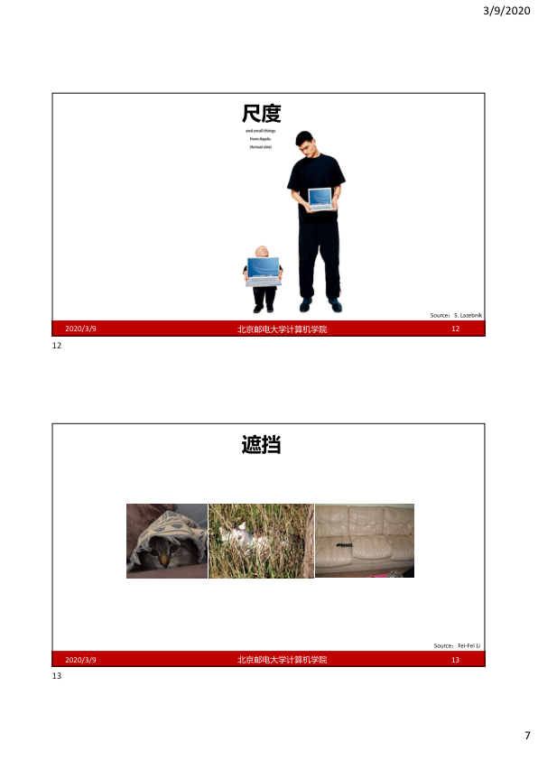
视觉案例： 不同身高人手持电脑的对比。
核心点： 同一物体在不同尺度下呈现的视觉特征差异极大。
视觉案例： 部分遮挡的猫与沙发。
核心点： 目标物体部分被遮挡时，如何提取完整特征进行识别。
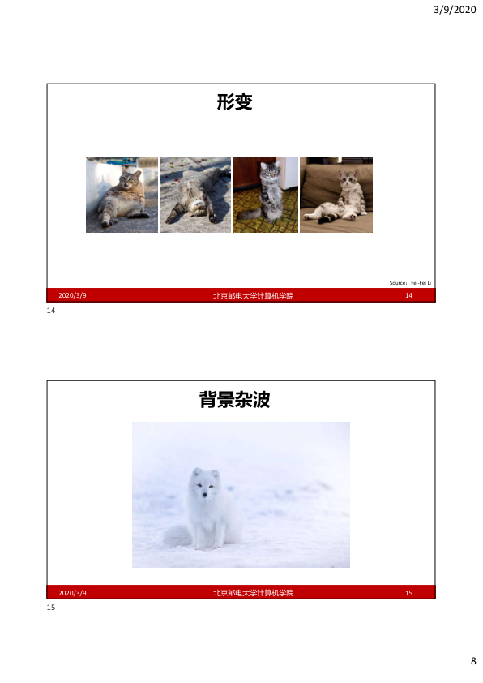
视觉案例： 不同姿态的猫。
核心点： 姿态的非刚性变换导致像素表现差异巨大。
视觉案例： 雪地里的北极狐。
核心点： 目标与背景在颜色或纹理高度相似时，分割与识别极具挑战。
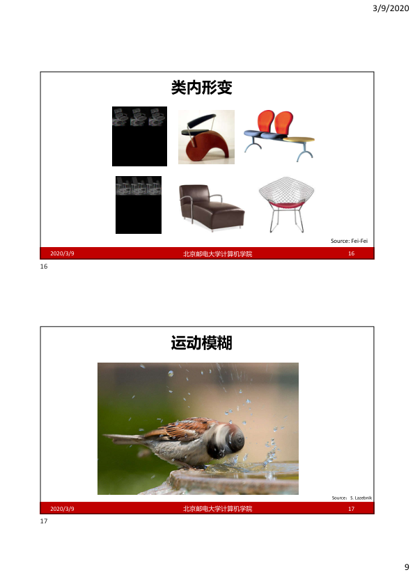
视觉案例： 各种样式的椅子。
核心点： 同一类别的物体在形态、材质和构造上存在巨大的类内多样性。
视觉案例： 戏水鸟的头部模糊。
核心点： 物体高速运动导致图像细节丢失，增加检测难度。
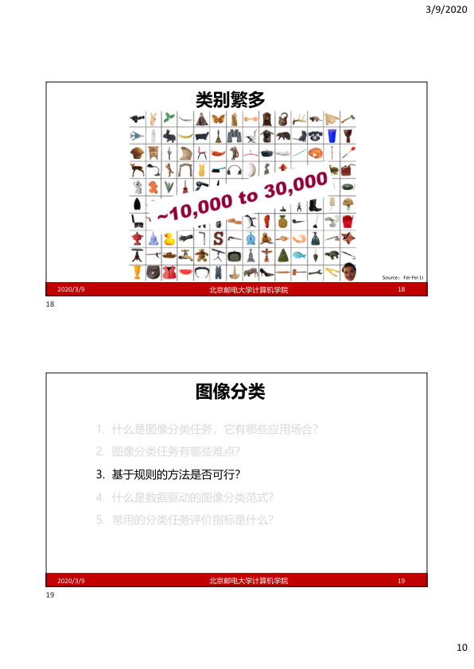
量级： 约 10,000 到 30,000 种类别。
核心点： 处理大规模数据集的复杂性挑战。
议题： 基于规则的方法是否可行？
核心： 开始探讨传统方法的局限性。
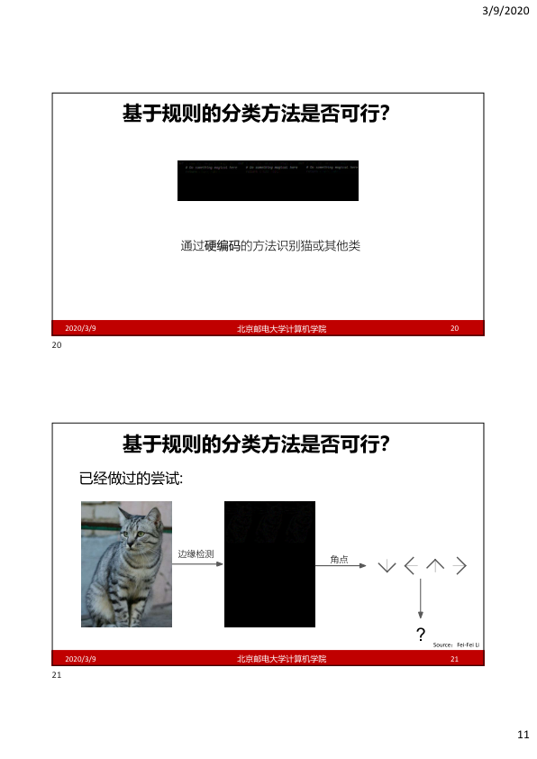
核心： 试图通过硬编码规则识别物体（如：猫），但在面对多变视觉特征时极其困难，无法穷尽逻辑。
尝试： 通过提取边缘、角点特征进行识别。
结论： 无法归纳物体本质，面对复杂场景结果不可预测。
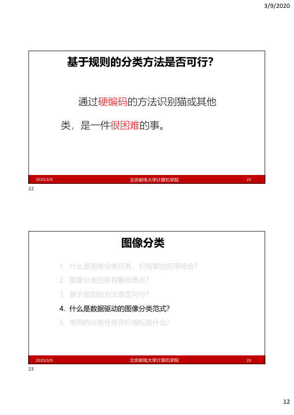
痛点： 极其困难，扩展性极差。
1. 定义与应用
2. 难点
3. 基于规则的方法
4. 数据驱动范式
5. 评价指标
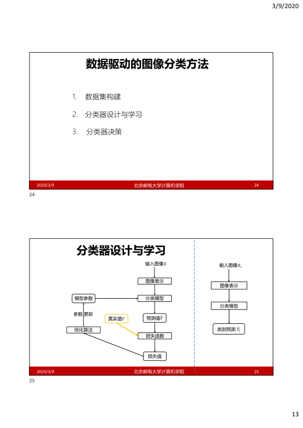
流程： 1. 数据集构建 2. 分类器设计与学习 3. 分类器决策。
Slide 13-B (下) 流程描述：
训练阶段：
推理阶段： 输入新图像，通过训练好的模型直接输出类别预测结果。
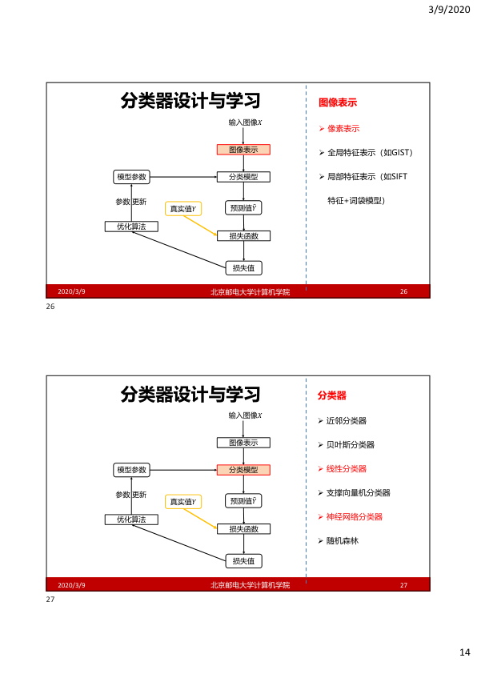
表示： 像素表示、全局特征、局部特征、特征+词袋模型。
模型： 线性、SVM、神经网络、随机森林等。
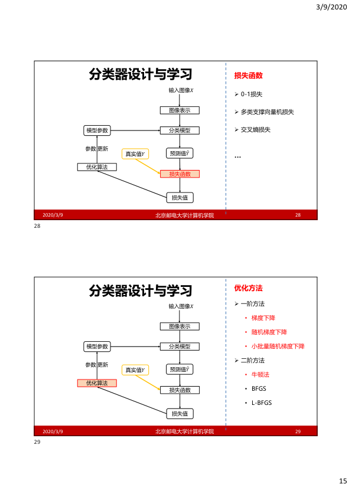
函数： 0-1损失、SVM多类损失、交叉熵损失。
方法： 一阶（SGD等）与二阶（牛顿法、L-BFGS）。
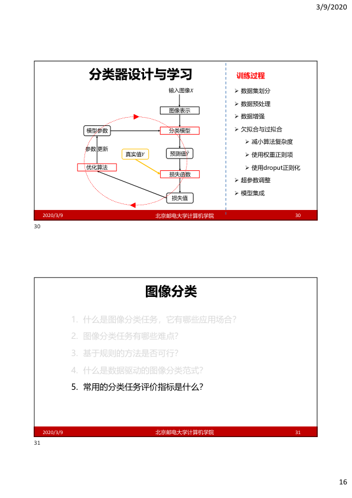
关键： 数据预处理、增强、正则化 (Dropout)、超参数调优。
Q1 欠拟合与过拟合：
1-4. 内容回顾
5. 评价指标分析
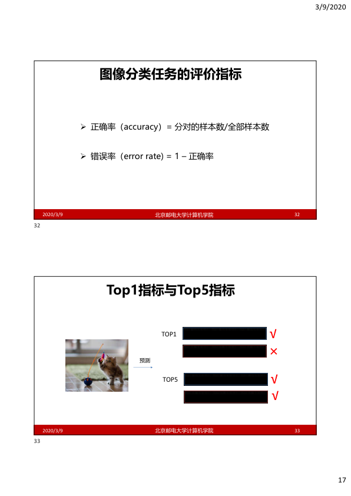
基础： 正确率 (Accuracy) 与 错误率 (Error Rate)。
指标： Top-1 与 Top-5 准确率。
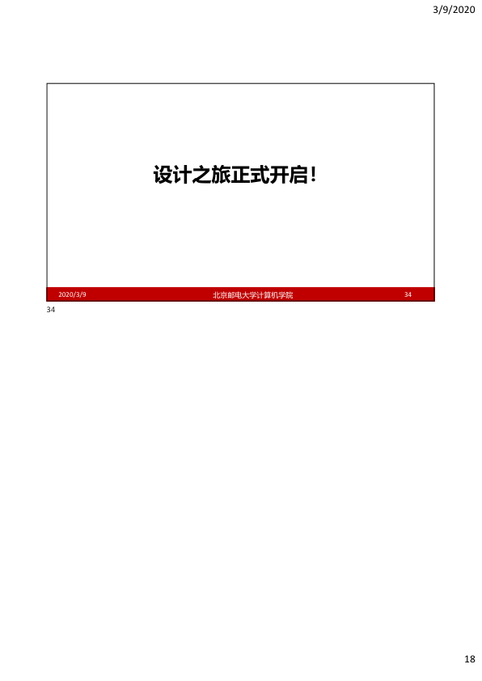
总结： 设计之旅开启！
说明： (页面暂缺/致谢页)。